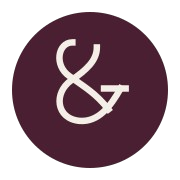
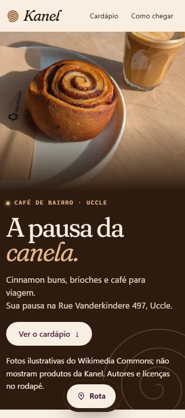
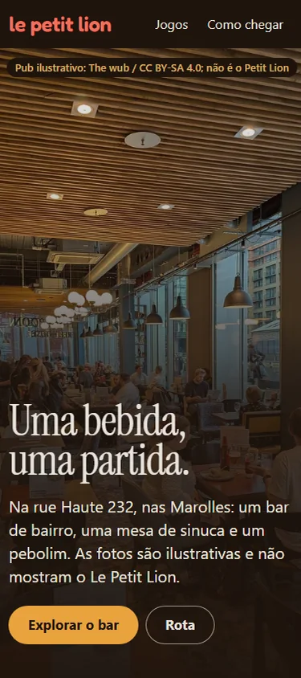
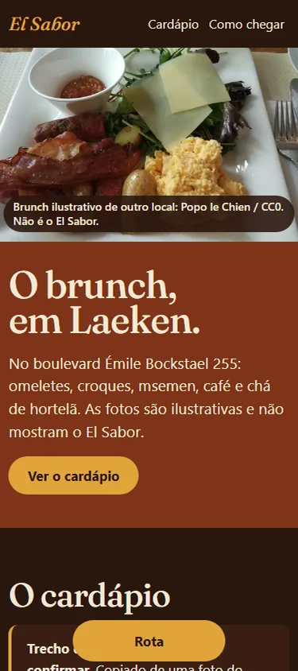
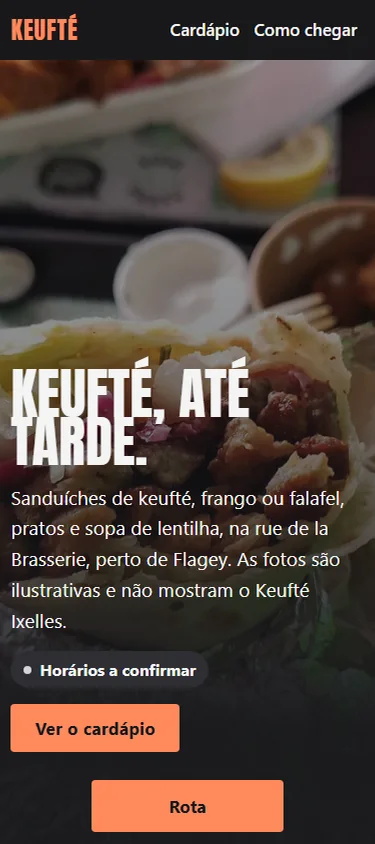
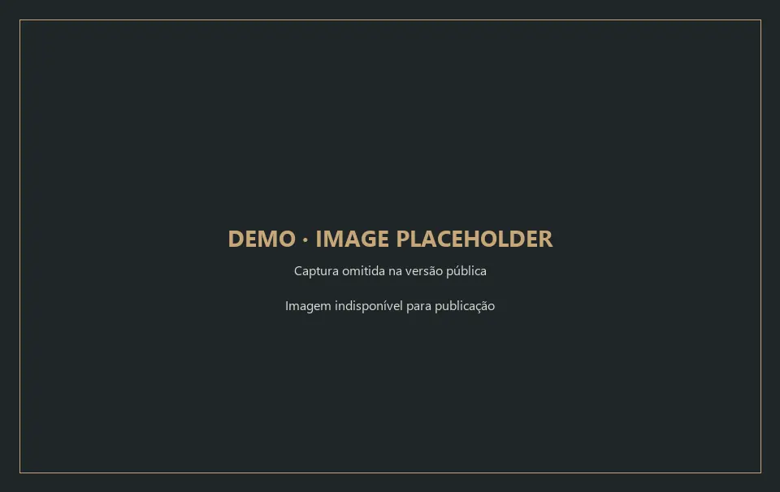

Schaeffer & Strey · Clarity with consequence
Editorial precision for ambitious ideas.
Schaeffer & Strey turns strategic thinking into precise, memorable digital experiences.
Cinco estudos digitais para cafés, bares e restaurantes de Bruxelas — cada um desenhado com identidade própria, informação verificada e interações construídas sob medida.
Projetos demonstrativos independentes (estudos de conceito), sem encomenda nem vínculo com os estabelecimentos.
- 5 estudosCinco sites demonstrativos navegáveis
- 3 segmentosCafés, bares e restaurantes de Bruxelas
- 320 a 1440 pxPrecisão editorial conferida do celular ao desktop

Clarity, made visible.Projetos selecionados
Cada demonstração abre em nova aba com direção de arte própria, conteúdo estruturado e interações reais. Filtre por segmento ou explore a série completa.
-


01 Estudo de conceito
Kanel
Café e padaria de bairro · Uccle
Uma página calorosa para um café de cinnamon buns: o cardápio vem primeiro, em abas, e cada item expande seus detalhes sem tirar o visitante da lista. Cardápio e preços de demonstração, sinalizados como tal.
- Cardápio em abas com detalhes expansíveis
- Abertura com foto e movimento suave
- Canais de contato exibidos apenas quando confirmados
-


02 Estudo de conceito
Le Petit Lion
Bar tradicional · Marolles
Um bar de bairro com sinuca e pebolim. A página convida a explorar os três ambientes do salão e a dar uma tacada numa minissinuca interativa, com horários e fontes sempre à vista.
- Minissinuca jogável: mira, força e seis caçapas
- Três ambientes demonstrados por placeholders gráficos
- Galeria de fotos que acompanha o gesto
-


03 Estudo de conceito
El Sabor
Restaurante de brunch · Laeken
Brunch, omeletes e chá de hortelã. O cardápio filtrável organiza os preços transcritos de uma foto do cardápio (a confirmar), e cada prato abre em ficha ampliada.
- Cardápio filtrável por categoria
- Fichas dos pratos ampliadas em modal
- Rota em um toque no celular
-


04 Estudo de conceito
Keufté Ixelles
Sanduíches e grelhados · Ixelles
Uma casa de sanduíches aberta até tarde. Ritmo urbano: brasas animadas no topo noturno, cardápio completo com seletor de tamanho e faixa contínua de fotos.
- Troca de tamanho com preços animados
- Faixa de fotos em rolagem contínua
- Horários da semana com a fonte indicada
-

05 Estudo de conceito
Le Petit Liberty
Café-bar · centro de Bruxelas
Um café-bar clássico em tom editorial. A fachada traz pontos numerados para explorar, três fotos datadas documentam o lugar sem inventar história e as bebidas se abrem em blocos.
- Fachada com pontos numerados interativos
- Sequência de fotos datadas, com crédito
- Bebidas em blocos que se expandem com suavidade
Think clearly. Move decisively.
Como trabalhamos
Estratégia sem ruído, direção de arte com propósito e execução conferida detalhe a detalhe.
- 01
Clareza estratégica
Endereços, horários e preços partem de fontes públicas com data de consulta. Tudo o que ainda exige confirmação aparece explicitamente como “a confirmar”.
- 02
Direção visual com critério
Cada projeto ganha linguagem própria — sem templates genéricos. Imagens de prévia local foram substituídas por placeholders; imagens licenciadas da Kanel têm seus créditos na página.
- 03
Engenharia responsiva
Hierarquia legível, rotas em um toque e interações leves conferidas do celular compacto ao monitor amplo (320 a 1440 px).
- 04
Rigor e acessibilidade
Navegação por teclado, alto contraste e respeito integral à preferência de movimento reduzido, validados em cada página.
Sobre a Schaeffer & Strey
A Schaeffer & Strey é um estúdio criativo independente dedicado a transformar pensamento estratégico em experiências digitais precisas e memoráveis. Esta série reúne cinco estudos de conceito criados para demonstrar nosso padrão de direção de arte, tipografia e engenharia interativa.
Os estabelecimentos retratados existem em Bruxelas, mas não encomendaram estas páginas nem possuem vínculo com elas. As demonstrações estão publicadas nesta série. Fotografias de visitantes/Google Maps e capturas que as continham foram excluídas; as áreas de imagem usam placeholders que não representam os estabelecimentos. As imagens da Kanel mantêm licenças e créditos Wikimedia.